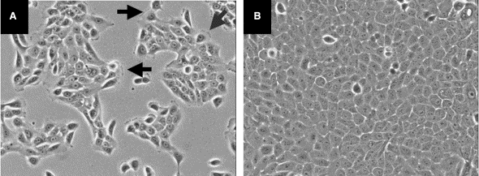

Fig. 2. Phase-contrast morphology of MCF-10A cells grown as a monolayer. (A) Subconfluent MCF-10A cells (15 h following trypsinization and passage) grow as clusters; lamellipodia are often observed at the edges of these clusters (black arrows). (B) At confluence, MCF-10A cells assume a cobblestone morphology, typical of epithelial cell lines.